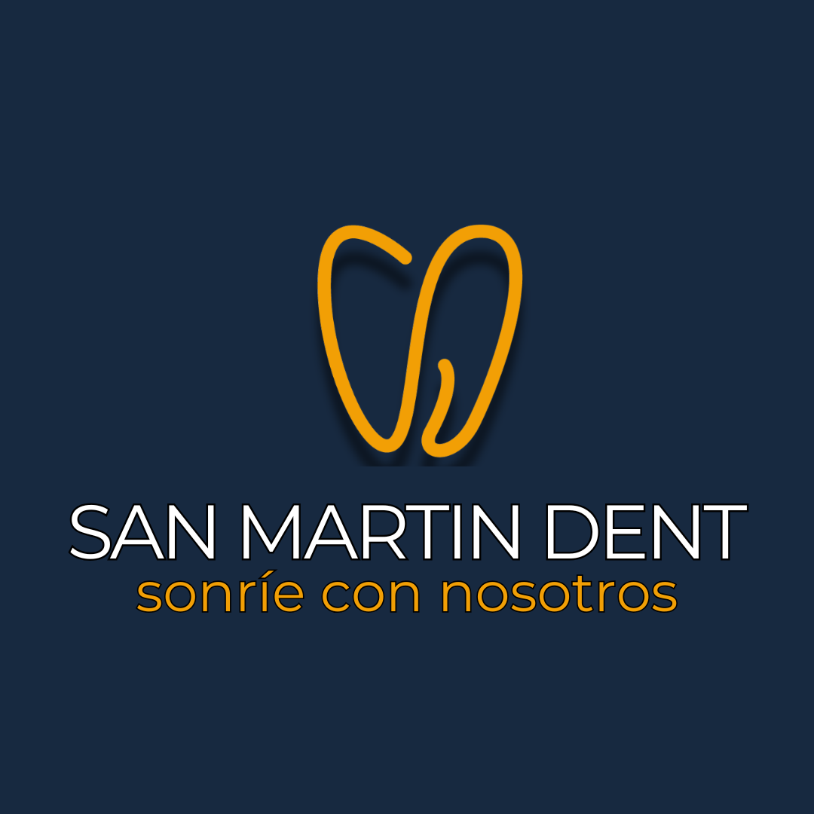

Clínica dental en Temuco especializada en diseño de sonrisa, implantes dentales y odontología integral con tecnología de vanguardia.
Implantes, ortodoncia, diseño de sonrisa y odontología integral para cada etapa de tu vida
Brackets, alineadores y corrección dental para todas las edades. Recupera la alineación perfecta de tu sonrisa con un plan personalizado.
ConsultarEspecialistas en transformación estética de sonrisas para adultos +40. Recupera la confianza y la belleza de tu sonrisa con tratamientos 100% personalizados.
ConsultarSolución permanente y natural para la pérdida dental. Nuestros implantólogos te devuelven la funcionalidad y la estética con los más altos estándares.
ConsultarAtención odontológica completa: prevención, diagnóstico y tratamiento de todas las patologías bucales para toda la familia, con enfoque humano y profesional.
ConsultarTratamiento de conductos para salvar dientes con daño profundo o infección. Eliminamos el dolor y preservamos tu diente natural con técnicas modernas y sin molestias.
ConsultarTratamientos no invasivos para rejuvenecer y armonizar tu rostro. Toxina botulínica, rellenos y más, aplicados por profesionales con criterio estético y clínico.
ConsultarSan Martin Dent nació con la convicción de que cada persona merece una sonrisa saludable y hermosa. Somos una clínica fundada por profesionales apasionados por la odontología, comprometidos con la excelencia clínica y el trato cercano.
Nuestros doctores fundadores — Dr. Ignacio San Martín, Dr. Andrés Alegría y Dr. Nicolás Gallardo — lideran un equipo multidisciplinario dedicado a entregar la mejor atención dental en la región de La Araucanía.
Trabajamos con tecnología moderna y un enfoque integral, para que cada paciente reciba una atención personalizada, cómoda y efectiva.
Conoce a todo el equipoOpiniones reales de pacientes de la Clínica Dental San Martin Dent en Temuco
"Clínica que cuenta con todas las tecnologías necesarias para darte un servicio de calidad y confiable, profesionales dispuestos a entregarte la mejor atención y cuidados dentales existentes. Si tienes la oportunidad de agendar una hora con algunos de los especialistas presentes en esta clínica, no dudes, dan muy buen servicio."
Google"Excelente atención, muy profesionales y muy cuidadosos."
Google"¡Excelente atención! Muy amables todos. Totalmente recomendable."
GoogleEstamos en el corazón de Temuco, listos para recibirte
Avenida San Martín 0795
Temuco, La Araucanía
+56 9 6727 0623
Lunes a Viernes: 9:00 – 19:00
Sábado: 9:00 – 14:00